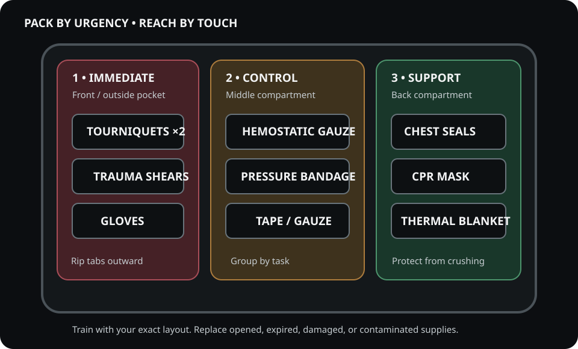

1) Organize Around Trained Actions
Life-threatening external bleeding can deteriorate rapidly. Equipment selection and access order should match current training, provider scope, local protocol, medical direction, and the needs of the actual response setting.
2) Core Components
- Tourniquets (2×): Proven windlass design for one‑hand use; label time of application.
- Hemostatic gauze: Kaolin or chitosan accelerates clot formation by activating the intrinsic pathway or providing a positive matrix for erythrocyte aggregation.
- Pressure bandage: Maintains direct pressure over packed wounds.
- Occlusive dressings: For open chest wounds to prevent air ingress (watch for tension pneumothorax signs).
- Nitrile gloves (several pairs): Barrier protection; bright color helps detect contamination.
- Trauma shears: Rapid exposure of wounds; avoids shearing skin like knives might.
- CPR mask: Safer rescue breaths; reduces pathogen exposure.
- Thermal blanket: Prevents hypothermia which impairs coagulation cascade.
3) Packing Layout
Front pocket: tourniquet(s). Middle: hemostatic gauze + pressure bandage. Back: adjuncts (occlusive, CPR mask, blanket). Stage items with rip‑tabs; train to blind‑reach them.

4) Training & Practice
Use dedicated training equipment in a qualified course to practice device application, wound packing, sustained pressure, reassessment, and communication. Follow the course, current protocol, and device instructions rather than a fixed depth or timing rule from a webpage. Never use training equipment for patient care; inspect and restock the operational kit after every use.
5) Red Flags & Safety
- Tourniquet pain is expected; do not loosen for pain relief.
- Monitor for airway compromise and shock (cool clammy skin, tachycardia, altered mentation).
- Use occlusive dressings cautiously; ventilatory distress needs urgent evaluation.
Supplier Research
- Review the legacy medical-supplier notes — then independently verify authorized distribution and professional suitability.
A listing is not an endorsement for professional use. Verify authorized distributors, product authenticity, expiration, storage requirements, agency policy, and current guidance.